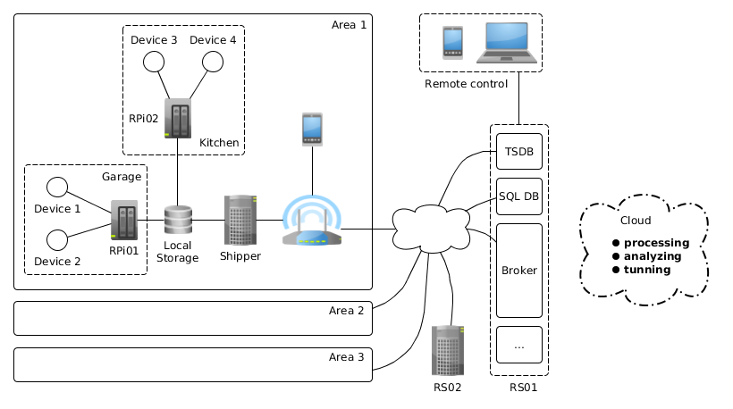

Robotice
THE NEXT-GEN MONITORING AND REACTING PLATFORM
What is Robotice ?
Robotice software controls large pools of single-board computers, sensors, and other
devices throughout a locations, managed through a dashboard or via the Robotice API.
Robotice works with popular open source technologies making it ideal for heterogeneous infrastructure.
GENERAL
- Planning, Monitoring, Reasoning, Reacting
- Multiplatform - x86 / x64 / armv*
- Support for more than 10 platforms
- Distributed but autonomous
- Web UI, Android, API, CLI
- 100% open source
PHILOSOPHY
- Asynchronous by nature
- High-Performing
- Slim and lightweight core
- Integrates with modern technologies
- Easily extendable
Supported metrics and devices
- Temperature / Humidity - DHT, TMP36, Hygro Soil
- Luminosity / Lux / Light - TSL, CDS
- Turn on / off - relay, Sispm, ..
- Liquid Flow, Current Sensor
Core
- Written in Python
- Uses Celery
- Graphite for metrics
- Boardie dashboard for visualization
- Robotie like Linux - Ubuntu, Arch
Project Structure
- Robotice Daemon - Python, Celery, ..
- Robotice Control - Django model, API
- Robotice Dashboard - Horizon(Django) extension
- Boardie Dashboard - Django, Angular
- Robotie Android client
- Robotie Mind - planned
Architecture

Example - distributed

EXAMPLE - ALL IN ONE

Use Case - Smart Home
- Plan - hold temperature among 20°C - 30°C between 6 AM and 10 PM
cycle: 24h
home_temperature:
cycles:
- start: 6:00:00
end: 22:00:00
low: 20
high: 30
Why Yaml ?
my_standard_working_day:
start: 6:00:00
end: 22:00:00
....
temperature_in_living_room:
cycles:
- start: ${my_standard_working_day:start}
end: ${my_standard_working_day:end}
low: 20
high: 30
Use Case - turn on / off (anything)
a = {device: sispm, port: 0, socket: 3}
real_value = 0
model_value = 1
r.send_task('reactor.commit_action',
args=(a, real_value, model_value),
queue = 'kitchen01',
exchange = 'box03').wait(10)
Robotice Mind
- Processing
- Analyzing
- Reasoning
- Tunning
Links
- Main - robotice.org
- GitHub - github.com/robotice
- Documentation - docs.robotice.org
robotice needs you !
- Check for open issues or open a fresh issue to start a discussion around a feature idea or a bug.
- Fork https://github.com/robotice/robotice on GitHub to start making your changes to the develop branch.
- Send a pull request